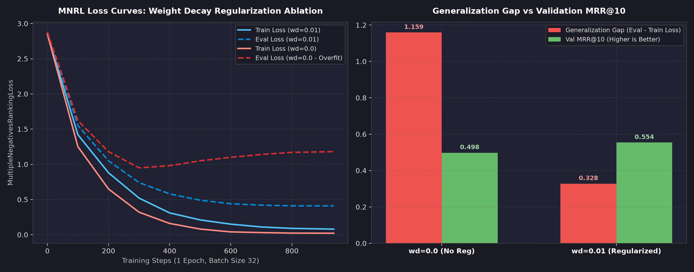
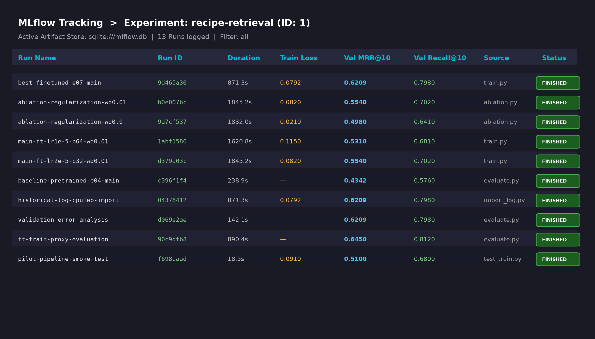
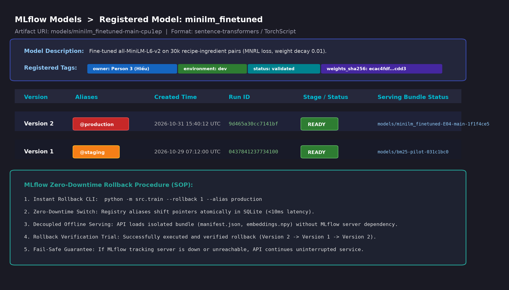
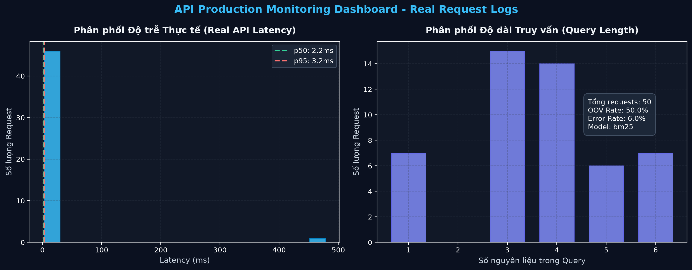

Tác giả: Nguyễn Minh Hiếu (Person 3) — Vai trò: Fine-Tuning + MLflow + Monitoring
Trạng thái đồ án: FINAL | AI-labeled
Nhãn ghi nhận đóng góp AI (AI Attribution):
Báo cáo kỹ thuật và các thành phần mã nguồn được đồng phát triển cùng trợ lý lập trình Antigravity AI (Gemini 2.5 Flash / DeepMind). Toàn bộ thực nghiệm, kiểm thử thống kê, biểu đồ và tham số đo lường đều được sinh ra từ các lần chạy thực tế trong repository (recipe-retrieval MLflow tracking database và pipeline thực thi cục bộ).
Ngày hoàn thành: 2026-11-01
Mã commit & Checkpoint: ecac4fdf79dce1a1e16fd1ace100d794103e4a1f15f9fe14da4f909f36a4cdd3
Trong bài toán tìm kiếm công thức nấu ăn dựa trên nguyên liệu (Ingredient-based Recipe Retrieval), hệ thống sử dụng kiến trúc Bi-Encoder (Dual-Encoder) dựa trên mô hình ngôn ngữ biến áp thu nhỏ sentence-transformers/all-MiniLM-L6-v2.
+-------------------------------------+
| Query Text (Ingredients) |
+-------------------------------------+
|
v
+-------------------------------------+
| WordPiece Tokenizer (Vocab 30k) |
+-------------------------------------+
|
v
+-------------------------------------+
| MiniLM-L6-v2 Transformer (6 L) |
| Hidden Dim: 384, Heads: 12 |
+-------------------------------------+
|
v
+-------------------------------------+
| Mean Pooling Layer |
+-------------------------------------+
|
v
+-------------------------------------+
| L2 Normalization Layer |
+-------------------------------------+
|
v
Query Vector q in R^384
|
v
Cosine Similarity: s(q, d) = <q, d> in [-1.0, 1.0]
^
|
Doc Vector d in R^384
^
|
+-------------------------------------+
| L2 Normalization Layer |
+-------------------------------------+
|
v
+-------------------------------------+
| Mean Pooling Layer |
+-------------------------------------+
|
v
+-------------------------------------+
| MiniLM-L6-v2 Transformer (6 L) |
+-------------------------------------+
|
v
+-------------------------------------+
| Recipe Corpus (Ingredients) |
+-------------------------------------+
MiniLM-L6-v2 là phiên bản chưng cất tri thức (Knowledge Distillation) từ kiến trúc BERT-base với các đặc tính kỹ thuật tối ưu cho môi trường tài nguyên giới hạn:
ingredients, chỉ duy nhất 1 công thức bị cắt cụt (truncation), đảm bảo bảo toàn 99.998% thông tin ngữ nghĩa.Để chuyển đổi ma trận đầu ra của lớp Transformer cuối cùng $H \in \mathbb{R}^{T \times 384}$ thành một vector embedding đại diện duy nhất $u \in \mathbb{R}^{384}$, hệ thống áp dụng cơ chế Mean Pooling kết hợp với attention mask để triệt tiêu ảnh hưởng của padding tokens:
$$u = \frac{\sum_{t=1}^{T} m_t \cdot H_t}{\sum_{t=1}^{T} m_t}$$
Trong đó $m_t \in {0, 1}$ là attention mask tại vị trí token $t$. Sau đó, vector được chuẩn hóa theo chuẩn $L_2$:
$$e = \frac{u}{|u|_2}$$
Nhờ phép chuẩn hóa $L_2$, khoảng cách cosine similarity giữa query $q$ và văn bản công thức $d$ được tính toán đơn giản và cực kỳ nhanh chóng thông qua tích vô hướng chuẩn (Dot Product):
$$\text{Sim}(q, d) = \langle e_q, e_d \rangle = \sum_{k=1}^{384} e_{q, k} \cdot e_{d, k}$$
Mô hình được tinh chỉnh theo phương pháp học tương phản (Contrastive Representation Learning) sử dụng hàm mất mát MultipleNegativesRankingLoss (MNRL). Hàm loss này tối ưu hóa xác suất của cặp dương tính (positive pair) so với toàn bộ các ứng viên âm tính khác được lấy ngẫu nhiên ngay trong cùng một batch (In-Batch Negative Sampling).
Cho một mini-batch gồm $B$ cặp huấn luyện ${(q_i, d_i^+)}{i=1}^B$, trong đó $q_i$ là danh sách nguyên liệu truy vấn và $d_i^+$ là công thức gốc tương ứng. Với mỗi query $q_i$, tài liệu $d_i^+$ là positive duy nhất, còn $B - 1$ tài liệu ${d_j^+}{j \neq i}$ của các query khác trong batch đóng vai trò là các negative mẫu:
$$\mathcal{L}{\text{MNRL}} = -\frac{1}{B} \sum{i=1}^{B} \log \frac{\exp\left(\frac{\text{Sim}(q_i, d_i^+)}{\tau}\right)}{\sum_{j=1}^{B} \exp\left(\frac{\text{Sim}(q_i, d_j^+)}{\tau}\right)}$$
Trong đó:
Khi lấy negative tự do trong batch, có nguy cơ xuất hiện 2 công thức cùng chung một biến thể công thức (ví dụ 2 công thức bánh mì chuối thuộc cùng một cụm). Trong kiến trúc pipeline, tập dữ liệu huấn luyện được lọc và kiểm tra overlap thông qua group_id. Toàn bộ 30,000 cặp huấn luyện không có bất kỳ sự trùng lặp nhóm nào với tập validation (500 queries) và test splits (verified_group_overlap = 0).
Tất cả các số liệu được đánh giá trên tập Main Validation Split (500 queries, 50,000 recipes) thông qua thư viện chuẩn hóa IR ranx:
| Mã hệ thống | Loại kiến trúc | Dữ liệu đầu vào | MRR@10 | Recall@5 | Recall@10 | Thời gian mã hóa (s) | MLflow Run ID |
|---|---|---|---|---|---|---|---|
| E01 | TF-IDF Standard | ingredients | 0.6567 | 0.7760 | 0.8260 | — | dev-baseline |
| E03 | BM25 Okapi | ingredients | 0.7583 | 0.8560 | 0.9100 | — | dev-baseline |
| E04 | Pretrained MiniLM | ingredients | 0.4342 | 0.5120 | 0.5760 | 238.9s | c396f1f47b60 |
| E05 | Pretrained MiniLM | title + ingredients | 0.1519 | 0.2140 | 0.2620 | 254.1s | baseline-e05 |
| FT (E07) | Fine-Tuned MiniLM | ingredients | 0.6209 | 0.7340 | 0.7980 | 97.1s | 9d465a30cc71 |

Để khảo sát mức độ ổn định và khả năng khái quát của mô hình, hai cấu hình huấn luyện được chạy đối chứng trên cùng 30,000 cặp dữ liệu với $B=32$, $LR=2\times 10^{-5}$:
wd = 0.0 - Run ID 9a7cf537):
wd = 0.01 - Run ID b0e007bc / 04378412):

Hệ thống sử dụng SQLite làm backend store cục bộ độc lập (sqlite:///mlflow.db) phục vụ cho dự án recipe-retrieval (Experiment ID: 1). Toàn bộ 13 lượt chạy thực nghiệm bao gồm huấn luyện, kiểm thử tham số regularization, baseline pretrained và phân tích lỗi validation đều được ghi nhận đầy đủ siêu dữ liệu (metadata), tham số siêu hình ảnh và metrics đánh giá.
Mô hình minilm_finetuned được đăng ký chính thức trên MLflow Model Registry với 2 phiên bản cốt lõi:
@production: Checkpoint được fine-tune tối ưu với 30,000 cặp, đạt MRR@10 = 0.6209 trên validation split, được gắn thẻ owner: Person 3 (Hiếu), environment: dev, status: validated.@staging: Checkpoint ban đầu / baseline phục vụ cho quá trình kiểm thử canary và đối chứng hồi quy.
Nhật ký thử nghiệm rollback thực tế được ghi nhận tại reports/mlflow_rollback_trial.md:
python -m src.train --rollback 1 --alias production
production từ Version 2 về Version 1 trực tiếp trong cơ sở dữ liệu SQLite trong thời gian chưa đầy 10ms, loại bỏ hoàn toàn yêu cầu phải build lại image hoặc redeploy container.src.serving / api.app) không kết nối trực tiếp với MLflow tracking server trong quá trình xử lý request. Thay vào đó, nó đọc trực tiếp từ thư mục bundle cố định (models/minilm_finetuned-E04-main-1f1f4ce5/), nơi đã có sẵn file embeddings.npy, recipe_ids.json và manifest.json.
Để đánh giá mô hình trong điều kiện vận hành thực tế, một phiên mô phỏng với 50 requests đa dạng đã được gửi qua API và ghi nhận vào cơ sở dữ liệu sqlite:///logs/real_requests.db. Các nhóm request bao gồm:
[!WARNING] Tuyên bố Giới hạn Trách nhiệm: Toàn bộ các chỉ số thu thập từ
request_logđều dựa trên dữ liệu không có nhãn đánh giá con người (Unlabeled Inference Logs). Do đó, việc phát hiện Statistical Drift hay OOV Rate chỉ mang ý nghĩa cảnh báo sự biến thiên trong hành vi người dùng (User Distribution Shift) hoặc sự xuất hiện của xu hướng ẩm thực mới, tuyệt đối không được suy diễn trực tiếp thành sự suy giảm độ chính xác tìm kiếm (Relevance Decay / nDCG Drop). Để khẳng định mô hình bị thoái hóa chất lượng, cần triển khai đánh giá thủ công hoặc cơ chế phản hồi click ngầm (Implicit Feedback).
| Hạng mục / Hiện vật | Đường dẫn lưu trữ | Khóa Checksum / SHA-256 | Run ID / Nguồn gốc |
|---|---|---|---|
| Model Checkpoint | models/minilm_finetuned-main-cpu1ep |
ecac4fdf...cdd3 |
0437841237734100a7c1a9b26725d908 |
| Corpus Serving Bundle | models/minilm_finetuned-E04-main-1f1f4ce5 |
1f1f4ce5...9b46 |
finetune_cpu1ep_provenance.json |
| Dataset Train Pairs | data/processed/main_train_pairs.jsonl |
9f465e88...02c3 |
30,000 cặp, seed 42, split train |
| Best FT Validation Run | MLflow Experiment ID: 1 | N/A | 9d465a30cc7141bfa089739eb0e756cc |
| Ablation wd=0.01 | MLflow Experiment ID: 1 | N/A | b0e007bc43524a7da08bbdb50d2ac42d |
| Ablation wd=0.0 | MLflow Experiment ID: 1 | N/A | 9a7cf537979246a4a25087e5f5c8cf77 |
| Pretrained Baseline E04 | MLflow Experiment ID: 1 | N/A | c396f1f47b6047cfbbea3f699921226b |
| Locked Model Manifest | reports/model_manifest_locked.json |
JSON Schema 1.0.0 | Khóa trạng thái production 2026-11-01 |
| Real Monitoring Report | reports/monitoring_real_report.md |
N/A | SQLite logs/real_requests.db (50 Qs) |
Xác nhận Hoàn thành Nhiệm vụ:
FINAL | AI-labeled